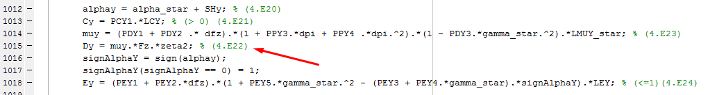

The equations coded in MFeval are published in the book: Title: Tire and Vehicle Dynamics Author: Hans Pacejka Edition: 3, revised Publisher: Elsevier, 2012 ISBN: 0080970176, 9780080970172 Length: 672 pages Link: https://www.elsevier.com/books/tire-and-vehicle-dynamics/pacejka/978-0-08-097016-5
And in the following paper: Besselink, I. J. M. , Schmeitz, A. J. C. and Pacejka, H. B.(2010) 'An improved Magic Formula/Swift tyre model that can handle inflation pressure changes', Vehicle System Dynamics, 48: 1, 337 to 352 DOI: 10.1080/00423111003748088 Link: http://dx.doi.org/10.1080/00423111003748088
Most of the equations in mfeval are from the Section 4.3.2 (Page 176) of the book. Those equations that had errors or their results where diverging too much from the results of the TNO solver (MF-Tyre MF-Swift 6.1.2.1) have been replaced with the equations published in the paper.
All the equations of the code have a number in brackets for reference, corresponding to the equations located in the book and the paper as shown below: 
The notation is as similar as possible with the notation of the book.